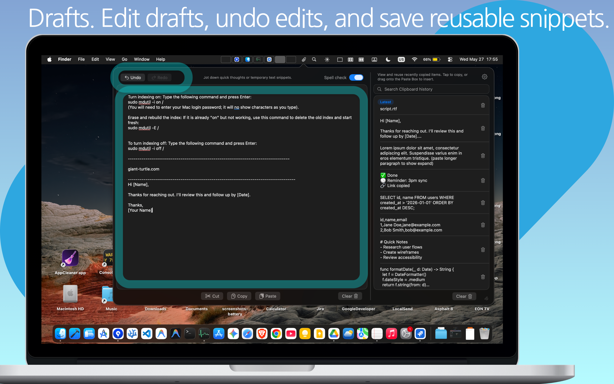
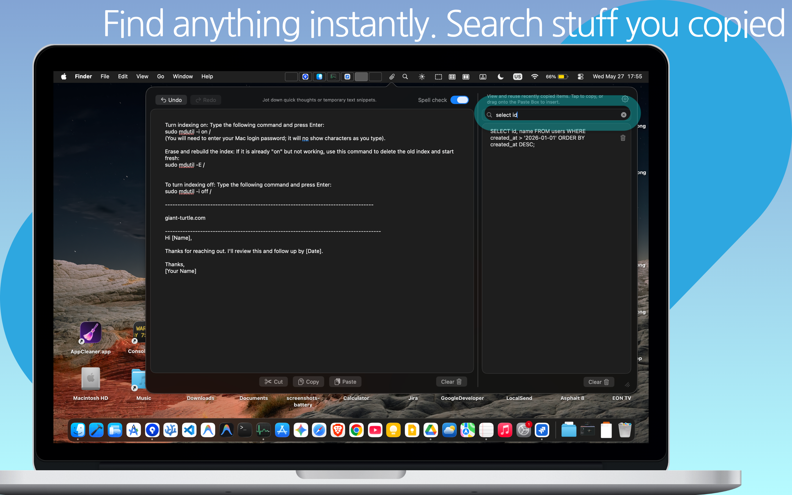
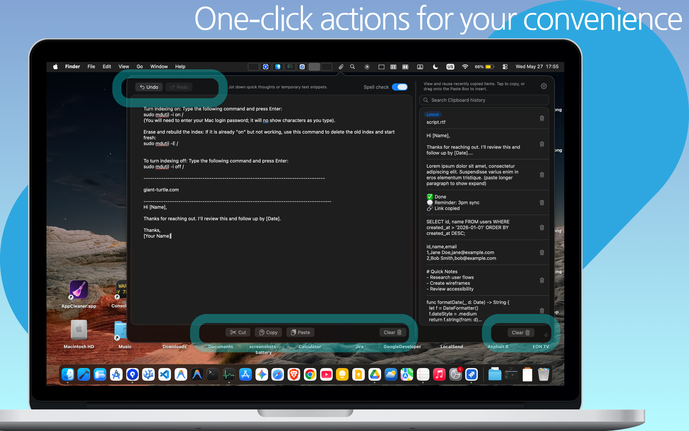

Paste Box
Your minimalist, persistent scratchpad.

Essential clipboard history + an always-available scratchpad
Paste Box is the essential companion for your macOS workflow. It combines a powerful clipboard history manager with a persistent, always-available scratchpad so you never lose a snippet or a thought.
Unified History
Automatically keeps track of everything you copy, so you never lose a snippet again.
Persistent Scratchpad
A dedicated space to jot down quick thoughts or temporary notes that persist across restarts.
Smart Formatting
Optional whitespace trimming and clean-text handling for copy/paste sanity.
Privacy First
Fully sandboxed — your data stays local on your Mac. No cloud syncing, no tracking.
Deep macOS Integration
Accessible from your menu bar, supports Launch at Login, and a smooth modern glassmorphic UI.
Spell Checking & LLM Help
Spell checking while composing and helpful interactions when using language-model workflows.
Stop losing your copies and start organizing your thoughts with Paste Box.


